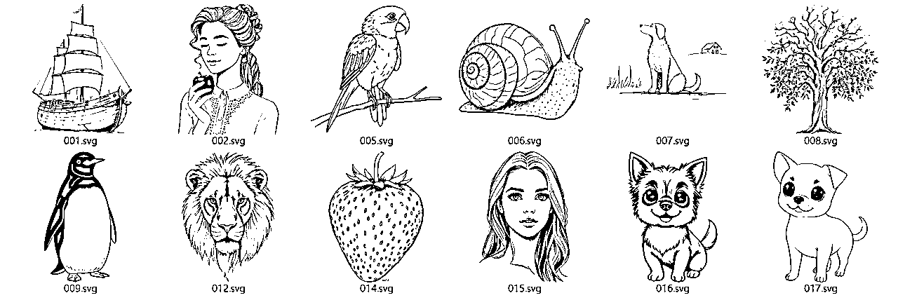

来源：https://i23vi4cvyf.feishu.cn/docx/H7OEd22aWotrrWxhCC7cgEs7nff
大家好，我是晓智！专注 AI 写作、绘画、海报的炼丹家AI 工具作者。
最近DeepSeek的热度持续升温，无疑的是它生成的结果质量真的太棒了，经常是超出大伙的预期，今天我就来分享如何用DeepSeek结合炼丹家海报神器分分钟生成上百张不同样式的海报。
对标案例：小红书爆款书单号，或资料类，图文结构固定都可以，创作效率直接翻百倍不夸张，轻轻松松做新媒体博主。
举例一些通过此类图文获取收益的方式：
带货书籍：轻松赚取佣金
小红书有带货功能，只需简单挂上书籍链接，用户一旦通过你的链接下单，佣金就自动流入你的口袋。选书也有讲究，得挑那些热门、经典或者自带话题的，比如《围城》、《追风筝的人》，这类书容易戳中人心。
文案得写得让人心动：别光说“这本书不错”，要来点金句搭配个人感悟，比如：“读完《围城》，我才懂，生活就像一座围城，外面的人想进去，里面的人想出来。推荐给每一个在人生路口迷茫的你。” 然后附上引导信息，简单直接，效果杠杠的！
知识付费：变现新途径
卖笔记、卖书单：如果你对某本书有独到见解，不妨把读书笔记、思维导图、书单整理成付费内容。比如：《2025年必读的5本心理成长书单》《如何用30分钟掌握一本书？我的高效阅读秘籍》
社群变现：建个读书社群，收取会员费，定期分享好书、深度解读金句，甚至搞个线上读书会，边读边聊，氛围嗨翻天的同时，也是在培养信任！
小红书商单：接广告
当粉丝数量达到一定规模后，借助蒲公英平台接广告，实现流量变现。还有，加入专业机构也是一条捷径。机构的优势在于广告资源丰富，而且手续费比小红书平台更低。
卖号：简单粗暴
大部分人经常想太多，容易焦虑，坚持不下去…真的流量有了，变现根本不用愁的，想全是问题，执行起来才会有答案！
大多数长期活跃的博主，内容都是有一定结构风格，完全可以用工具技巧快速完成！
接下来，我将用三步教你如何批量制作这种吸睛图文，后续触类旁通。
①炼丹家AI（接入DeepSeek R1）：https://www.liandanjia.com/
②炼丹家海报：https://poster.liandanjia.com/
③AI SVG图片生成器：https://svg.la/zh/
①批量生成主题金句。②生成配图。③批量生成笔记。
文章较长细节多，建议收藏后慢慢看哈！
首先，根据对标的赛道，利用炼丹家AI批量生成主题金句。打开AI工具，输入指令，
根据沃尔特艾萨克森著的《埃隆马斯克传》书籍，请帮我列举50个书中最经典的金句，以表格输出。表格格式有两个字段，字段一：主题金句（中文），字段二：金句来源（例如：——《埃隆马斯克》）。
上面指令模板需要注意，提示词里的“金句来源”，是考虑到一些书单号每期内容会推荐多本书籍，提示词可以适当修改如下：请帮我列举50个经典畅销书中的金句，不要有重复书籍，以表格输出。表格格式有两个字段，字段一：主题金句（中文），字段二：金句来源（例如：——《埃隆马斯克》）。
不紧不慢，炼丹家AI的DeepSeek R1模型就通过清晰的深度思考，给我一次性输出了50个主题金句等内容，我们复制进Excel文件存起。
注：①炼丹家AI对话有默认上下文关联长度，需要可以到“对话设置”里把长度调至最高 100000 token，避免AI输出中途因为上下文关联长度受限就不回复了。
②这里可能有些朋友会遇到文本表格复制到Excel中内容会被分成多行的问题，是因为文本中带了手动换行符或者回车符导致，解决方法可以是复制内容到word中把手动换行符（^l）以及回车符（^p）都替换成文档中没有的字符或字符串，复制到Excel之后再把替换的字符或字符串替换成换行符或回车符就可以恢复了。
很多书单号图文内容中，会另外带着图片素材，显得更加精致、博取用户更多的注意力，例如：抠背景后固定的作者人像、不同的主题相关配图等，我们都来聊聊。
需要抠透明背景图的，可以使用炼丹家海报 - AI工具 - AI抠图功能。
也可以使用炼丹家AI - 智能修图 - 抠图功能。
注：元素差异大，用“点选”抠图效率高。
不同的主题相关配图，可以使用炼丹家AI绘画生成，只需要输入具体画面描述词，选择模型风格，即可快速生成图像。
还可以通过AI SVG图片生成器，填写画面描述、尺寸、填充颜色，快速生成SVG矢量图片，二次编辑也简单，风格非常适合做小红书、小绿书的图片素材哈。
提前统一处理好替换素材，事半功倍。

上面我随便整了些图片素材，一会做示范用。
打开炼丹家海报，选择右上角新建设计 - 小红书配图（1242x1660）
这里我们在模板 - 小红书封面，找到一个很适合的风格，在内容右下角处加个图片（我的 - 资源管理），接着点击上方批量套版设计。
注：海报上的元素种类，按需调整设计，后面方便对应表格去替换，我这里把原海报中金句跟金句来源做了拆分。
进入炼丹家设计批量设计器中，选择需要替换项，点击下一步。
注：①这里展示文字、图片全部支持批量化替换的操作。
②如果跟表格参数顺序不同，替换会乱，这里优先考虑到海报编辑里，调整图层优先级，其次再考虑调整表格排序。
下面是表格文件带图片后的格式。
注：图片需要在表格中，选择嵌入到单元格，才是正常对应上的格式。

支持导入Excel表格，选择追加新数据或全量覆盖数据，这里表格内格式就是我们刚刚对应行列整理好的；不清楚格式，也可以先选择导出为Excel表格，按对应内容格式把新的整理进去，再导入Excel。
我们选择刚刚编辑好的表格导入，只要符合对应结构即可完成关联数据，十分方便！
确定内容数据没问题，点击生成批量套版作品，会进入最终的样式编辑页，不调整就点击右上角下载作品，勾选上全部需要的画板即可。
轻轻松松，50个笔记就快速做完啦。
以上三步，利用AI高效批量生产图文笔记，特别适合风格统一的爆款流量图文账号，提效起来不要太舒服啦！
还有那种资料类的，很容易就能触发用户互动反馈，从而推向更高的流量池。
注：小红书的评分体系，叫作：CES=点赞数（1分）+收藏数（1分）+评论数（4分）+关注数（8分），笔记分数越高，排名越靠前。
建议大家可以同时做小红书和小绿书，尤其是小红书。
抖音和快手早已被专业团队垄断，单打独斗难出头；蝴蝶号虽强但竞争也激烈，视频制作复杂且审核严苛，新手不宜入场；小红书、小绿书（公众号图文）平台内容可复用，推荐机制友好，且易获正面反馈。
双书真的是新手崛起的优选平台。
看到今年 AI 热度以及趋势，大概率国内 AI 应用会面临大爆发，我们也会不断精进细分业务，提供更多有效的解决方案，享受新时代带来的红利机会。
欢迎大家一起交流，共同成长。